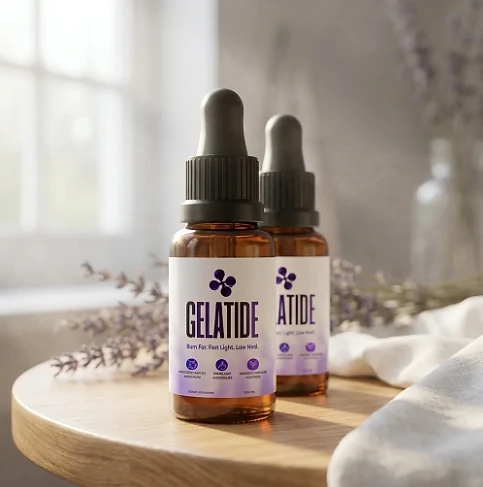
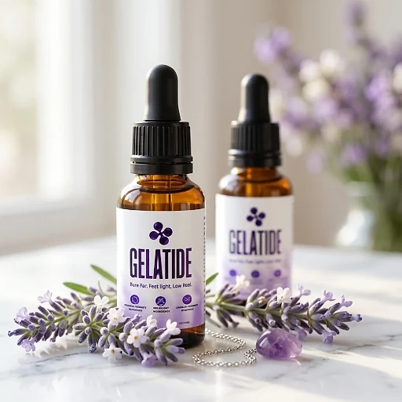

What Is Gelatide And How Does It Work?
Gelatide is a liquid dietary supplement designed to support daily metabolism, healthy digestion, and steady energy for adults who want to address the slow metabolism, low energy, and stalled progress that can make weight goals feel out of reach through a natural, dependable approach — without complicated routines or temporary quick fixes.
It utilizes a simple daily dropper of liquid that combines Chromium with a proprietary blend that includes L-Carnitine, Green Tea Leaf, Guarana Seed, African Mango Seed, Coleus Forskohlii, and Capsicum extracts to support the use of fats as fuel, energy, and nutrient absorption, helping the body maintain its natural balance throughout the day.
The ingredients in Gelatide are botanical extracts, amino acids, and a trace mineral that, according to the official website, help the body use fats as fuel, support healthy digestion and nutrient absorption, and support metabolism, particularly for adults who prefer one simple daily routine over multiple products or complicated plans.
Rather than acting as a short-lived artificial fix, Gelatide focuses on a whole-formula approach, working gradually alongside daily routines to help maintain energy between meals, a comfortable digestion, and long-term wellness.
With consistent daily use, many users report more energy during the day, a lighter feeling, and a gradual sense of control over their weight goals, especially when combined with a balanced diet, good sleep, and regular exercise.
From a practical standpoint, Gelatide is a daily liquid for metabolism and weight management support in a 1 fl oz (30 ml) dropper bottle designed to support wellness from within — helping you stay active, energized, and in control of your health.
Made in the USA with globally sourced ingredients and manufactured in an FDA-registered facility, according to the product label, Gelatide is designed for regular daily use, focusing on safety, purity, and quality for those seeking a natural, non-prescription route to healthy weight management.
Gelatide Ingredients
Every 1 ml serving of Gelatide contains Chromium and a 200 mg proprietary blend listed on the Supplement Facts panel. The official website highlights six of its components, chosen to support fat metabolism, energy, and appetite control as part of a consistent daily routine:
L-Carnitine Base: A compound that takes part in transporting fats into cells to be converted into energy.
Green Tea (Camellia sinensis) Leaf Extract: A source of catechins and natural caffeine associated with thermogenesis and mental focus.
Guarana (Paullinia cupana) Seed Extract: An Amazonian seed that naturally contains caffeine and provides steady energy through the day.
African Mango (Irvingia gabonensis) Seed Extract: A seed extract commonly used to support satiety and appetite control.
Coleus Forskohlii Root Extract: A traditional botanical widely studied for its role in metabolism.
Capsicum Annuum Fruit Extract: A pepper extract included for its natural thermogenic effect.
Together, these ingredients work synergistically to support metabolism, satiety, and healthy weight management from within. The same blend also lists Maca Root, Grape Seed, Eleutherococcus, Astragalus, Gymnema Leaf, Grapefruit, and Panax Ginseng extracts, Raspberry Ketones, L-Glutamine, L-Tyrosine, L-Arginine, Beta-Alanine, Monoammonium Glycyrrhizinate, GABA, L-Ornithine, and L-Tryptophan, and the label does not show the amount of each component. Chromium (as Chromium Picolinate) appears at 0.7 mcg, 2% of the Daily Value. The other ingredients are glycerin, water, organic lemon extract, stevia extract, xylitol, sodium benzoate, potassium sorbate, citric acid, and natural flavors.
Gelatide is designed for daily use, offering a natural, non-prescription approach to supporting metabolism and weight management, without complicated routines.
Gelatide Side Effects
Gelatide is generally considered well tolerated and is designed for adults of different ages and lifestyles who are looking for a safe, natural, and balanced approach to weight management, especially those who prefer an easy daily liquid routine to support metabolism, digestion, and well-being without resorting to risky solutions with severe side effects.
All ingredients used in Gelatide are described on the official website as naturally derived and gluten-free, and Gelatide is made in the USA with globally sourced ingredients and manufactured in an FDA-registered facility, according to the product label, reinforcing consistency, safety, and reliability.
With no widespread reports of serious side effects, Gelatide is generally considered a well-tolerated option. One caveat: the official website says the formula has no artificial stimulants, but the blend includes Guarana and Green Tea, which naturally contain caffeine, so people sensitive to stimulants may prefer to take it in the morning. Anyone who takes prescription medication should show the label to their doctor first. It is not intended to diagnose, treat, cure, or prevent any disease, and individual results may vary.
According to the label, pregnant or nursing mothers, children under the age of 18, and individuals with a known medical condition should consult a physician before using Gelatide, ensuring it fits safely within their personal wellness plan.
Gelatide Dosage
The recommended Gelatide dosage is one or two droppers full a day, and it is designed to fit easily into a daily routine, making consistency simple and convenient. Formulated as an easy liquid with a dropper, it requires no capsules to swallow, no powders to mix, and nothing complicated to prepare.
The recommended approach, as printed on the label, is to shake the bottle well before each use, take one or two droppers full daily, place the liquid in the mouth, and swallow. The official website suggests taking Gelatide in the morning, preferably before a meal, or as directed by a healthcare professional, which allows its ingredients to work consistently.
For best results, consistency is key. Each bottle contains 1 fl oz (30 ml), or 30 servings of 1 ml, which the official website treats as a one-month supply, and because nutritional support for metabolism builds gradually, many people make it part of an ongoing wellness routine.
There is no need for complex schedules or multi-step routines. One simple daily routine is designed to build lasting support gradually alongside a balanced diet, good sleep, and an active lifestyle. The label also advises keeping the bottle away from heat, light, and humidity, and not using it if the safety seal is damaged or missing.
As with any dietary supplement, it's important not to exceed the recommended dose and to check the label on your bottle. Gelatide works best when used regularly, combined with proper hydration, balanced nutrition, and healthy daily habits.
Gelatide – Refund Policy
You can order Gelatide with confidence, knowing that every purchase is protected by a 60-day guarantee counted from the day the order was placed. This allows you to try the formula and decide if it delivers the support you expect.
According to the return policy linked on the official website, customers who are unsatisfied for any reason can return the product and request a refund within 60 days of the purchase date. The official website suggests using the product for at least 30 days before deciding. All bottles must be sent back, whether they are opened, empty, or sealed, and the return shipping cost is paid by the customer.
How the refund process works: If you decide Gelatide is not right for you, email customer support with "Refund Request" in the subject line, then send all the bottles and the packing slip to the return address given in the policy, with a note containing your full name and email. Once the package is received, your refund is processed, and you will receive a confirmation email.
Customer Support Contact Information: contact@customercs.com or +1 (507) 448-8190, as printed on the product label.
Refund Processing Time: According to the policy, processing takes between 5 and 10 days after the package arrives, and the time for the amount to appear on your statement depends on your bank or card company.
This refund policy is designed to give customers a clear and transparent experience when trying Gelatide.
Gelatide Customer Reviews
-
Michael Thompson — Houston, TXVerified Purchase – 6 Bottles
“I struggled with excess weight for years, which really affected my self-esteem. After using Gelatide for 3 months, I am now able to lose weight and keep my body in shape. It has revitalized my life and given me a new confidence.”
-
Sarah Rodriguez — Chicago, ILVerified Purchase – 6 Bottles
“... I often struggled with losing weight and managing my blood sugar. Gelatide has been a game-changer for me. After just 1 month of use, I noticed significant improvements in my metabolism and overall health. I feel like I’ve regained my energy!”
-
Lauren Rio — Seattle, WAVerified Purchase – 6 Bottles
“After menopause, I experienced severe weight gain and struggled to shed it. I thought my days of having a healthy body were over until I discovered Gelatide. After using it for 2 months, I’m now able to enjoy an active life and feel good about myself again. It has truly been a life-changing product.”
Gelatide – Where To Buy
Gelatide is sold through its official website, so if you decide to try it, it's important to be careful about where you purchase it. The official website is the only sales channel the manufacturer lists, and it does not point to marketplaces such as Amazon, eBay, or Walmart.
Listings on third-party platforms may look similar but cannot be verified as authentic, raising concerns about safety, quality, and ingredient freshness — a real concern for a liquid formula. Products purchased outside the official source may not be covered by the 60-day guarantee.
For this reason, most customers recommend purchasing Gelatide only through the official website. Buying directly from the official source ensures you receive the authentic original product, made in the USA, with access to customer support and the full guarantee. According to the official website, every purchase is a one-time order, with no automatic renewals, hidden fees, or surprise charges.
To avoid counterfeit batches and ensure maximum quality, always verify that you are ordering from the official Gelatide website before completing your purchase.
To ensure you’re getting the authentic product, most users choose to visit the official website.
Is Gelatide A Scam?
Based on what the official website and the product label disclose, Gelatide does not appear to be a scam. It is a real liquid supplement, sold through an established retailer, and formulated to support metabolism, digestion, and healthy weight management as part of a consistent routine.
The ingredients used in Gelatide — Chromium and a blend with L-Carnitine, Green Tea Leaf, Guarana Seed, African Mango Seed, Coleus Forskohlii, and Capsicum extracts, among others — are well known in the wellness field, and the label publishes a Supplement Facts panel with the full ingredient list and the total amount of the blend for transparency.
In addition to its formula, Gelatide is made in the USA with globally sourced ingredients and manufactured in an FDA-registered facility, according to the product label, with a focus on safety, purity, and consistency.
Many users report more energy and a lighter feeling throughout the day and an easy daily habit, making Gelatide a practical option for those seeking natural support for weight management. The blend is modest in quantity, so expectations should stay realistic: results vary from person to person, and no supplement replaces a balanced diet, regular exercise, or medical care.
Gelatide is backed by a 60-day guarantee, and orders are one-time purchases with no automatic renewals, recurring charges, or hidden fees. The return steps and the return address are published in the policy linked on the official website, which underscores the manufacturer's transparency with customers.
If you're looking for a simple daily liquid to support metabolism, energy, and well-being without complicated routines, Gelatide is worth considering — especially when purchased directly from the official website.
For those who want to verify product details or check current availability, the official Gelatide website remains the safest option.

Check Availability On Official Website